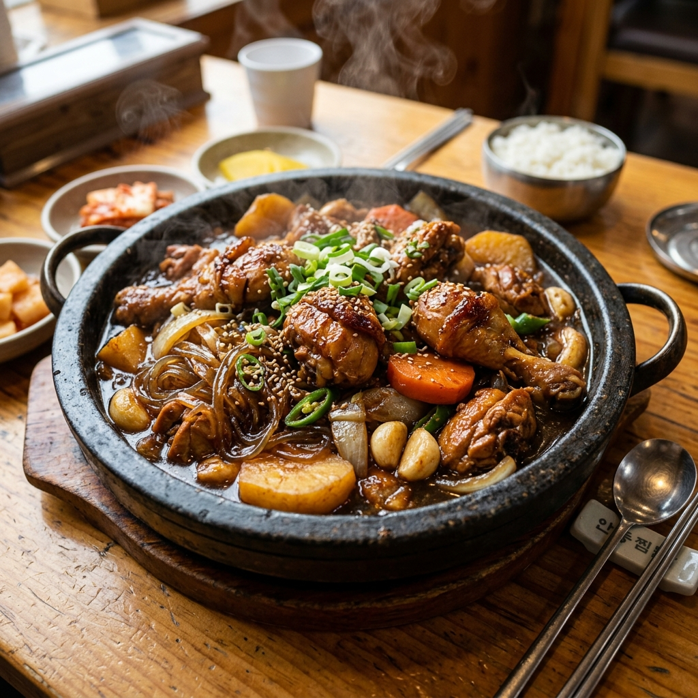
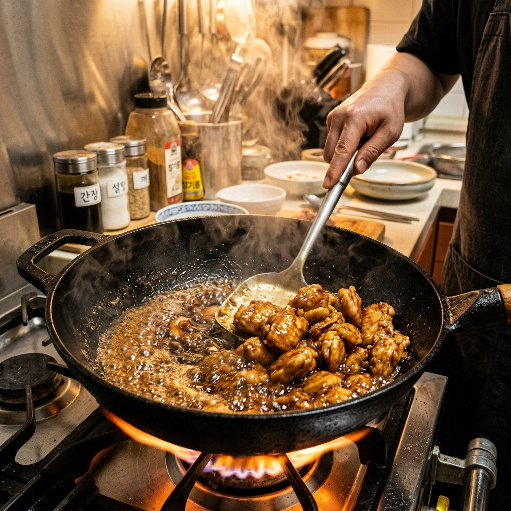
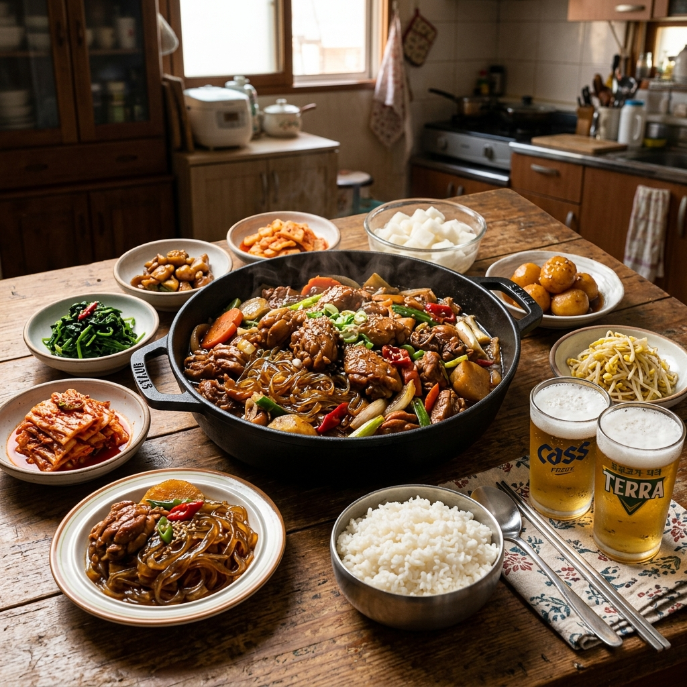

안동찜닭 레시피 2026 — 간장 캐러멜라이징 공법으로 완성하는 황금빛 단짠 정통 비법
경상북도 안동시 구시장 골목에서 태어나 전국을 사로잡은 안동찜닭. 닭을 쪄내는 요리처럼 들리지만, 실제로는 볶다가 찌는 독특한 복합 조리법으로 완성되는 이 음식의 핵심은 단 하나, 간장 캐러멜라이징(Maillard Reaction + Caramelization)입니다. 인공 색소 없이 오직 간장의 당분이 고온에서 갈색화 반응을 일으켜 완성하는 짙고 찬란한 황금빛 색감 — 바로 그것이 안동찜닭을 평범한 닭볶음탕과 구별짓는 결정적 차이입니다.
01. 안동찜닭의 역사 — 구시장 골목에서 전국으로
안동찜닭의 발상지는 경상북도 안동시 중앙신시장 내 '찜닭 골목'입니다. 1980년대 안동 구시장 상인들이 값비싼 통닭에 맞서 닭의 자투리 부위를 활용해 만들어낸 것이 시초로 전해집니다. 당시 닭머리, 닭발, 닭날개 등 남는 부위에 간장과 설탕, 마늘을 넣고 졸여 파는 방식이었다고 합니다.
이후 2000년대 초 안동찜닭이 TV와 인터넷을 통해 전국적으로 알려지면서 엄청난 붐이 일었습니다. 현재 안동 구시장의 '찜닭 골목(일명 자연 골목)'에는 20여 개의 찜닭 전문점이 어깨를 맞대고 있으며, 주말이면 전국에서 찾아온 미식가들로 북적입니다.
안동찜닭의 가장 큰 특징은 당면 포함이라는 점입니다. 당면이 국물을 흡수하며 쫄깃하게 익어가는 과정에서 닭고기와 채소의 풍미를 듬뿍 담아내, 한 그릇으로 밥과 국수를 동시에 즐기는 듯한 포만감을 줍니다. 여기에 청양고추의 알싸한 매운맛까지 더해지면 단짠 + 매운맛의 삼각 균형이 완성됩니다.

[안동찜닭 완성 플레이팅 — 황금빛 캐러멜라이징 색감] / AI 생성 이미지
02. 재료 & 분량 — 4인분 기준
🛒 재료 목록 (4인분)
[메인 재료]
• 닭 (토막 낸 것) — 1마리 분량 (약 1kg~1.2kg), 또는 닭 토막 600~700g
• 당면 — 100g (조리 전 찬물에 20분 이상 불리기)
[채소 재료]
• 감자 — 중간 크기 2개 (큼직하게 깍뚝썰기)
• 당근 — 1/2개 (어슷썰기 또는 깍뚝썰기)
• 양파 — 1개 (1/4로 자르기)
• 대파 — 2대 (어슷썰기)
• 청양고추 — 3~4개 (어슷썰기, 매운맛 조절)
• 마늘 — 통 마늘 10쪽 (껍질 제거 후 통째로)
• 생강 — 1쪽 (얇게 저미기)
[양념장]
• 진간장 — 5큰술 (색을 내는 핵심!)
• 올리고당 또는 물엿 — 4큰술
• 설탕 — 2큰술
• 고춧가루 — 1.5큰술 (기호에 따라 조절)
• 맛술 (미림) — 3큰술
• 다진 마늘 — 2큰술
• 다진 생강 — 1/2큰술
• 참기름 — 1큰술 (마지막에 추가)
• 후춧가루 — 약간
• 물 — 1컵 (240ml)
03. 핵심 기술 — 간장 캐러멜라이징 공법
안동찜닭의 색깔은 인공 색소나 카라멜 색소가 아닙니다. 진간장 속 당분이 고온에서 열분해(Caramelization)되고, 아미노산-당 반응(Maillard Reaction)이 동시에 일어나며 생성되는 자연적 갈변 반응의 결과물입니다. 이 반응을 제대로 유도하는 것이 안동찜닭 색감의 전부입니다.
🔥 캐러멜라이징 3단계 핵심 원칙
1. 강불 + 기름 없이 팬을 달구기: 냄비(또는 웍)를 처음부터 강불로 충분히 달굽니다. 기름을 두르기 전에 팬이 충분히 뜨거워야 합니다. 물을 한 방울 떨어트렸을 때 즉시 증발해야 적정 온도(180°C 이상)입니다.
2. 간장+설탕 혼합물 먼저 투입: 진간장 3큰술과 설탕 2큰술을 미리 섞어 달궈진 냄비에 투입합니다. 15~20초 내에 거품이 올라오며 진한 캐러멜 향이 나기 시작합니다. 이 시점이 바로 마야르 반응이 활발히 일어나는 구간입니다.
3. 닭 즉시 투입 & 코팅: 간장 거품이 황금색으로 변하기 시작하면 즉시 닭 토막을 투입하고 빠르게 뒤집으며 표면 전체에 간장 캐러멜을 코팅합니다. 이 30초가 전체 색감의 8할을 결정합니다.
이 공법의 가장 큰 위험은 '탄내'입니다. 캐러멜라이징이 과도하게 진행되면 쓴맛과 탄 냄새가 생깁니다. 황금색 → 짙은 갈색 변화를 눈으로 확인하며 닭 투입 타이밍을 반드시 지켜주세요.
04. 닭 전처리 — 잡내 완벽 제거법
아무리 좋은 닭이라도 전처리 없이 바로 조리하면 특유의 비린내가 요리의 품질을 낮춥니다. 다음 두 가지 방법 중 하나를 선택하세요.
방법 1 — 우유 침지법 (30분): 닭 토막을 우유에 30분간 담가 두면 우유의 카제인 단백질이 비린내 유발 성분인 트리메틸아민(TMA)을 흡착하여 제거합니다. 조리 전 물로 깨끗이 씻어내면 됩니다. 가장 효과적인 방법으로, 닭가슴살처럼 지방이 적은 부위에도 적용 가능합니다.
방법 2 — 청주 + 생강 밑간 (15분): 시간이 부족하다면 청주 3큰술 + 다진 생강 1/2큰술을 닭에 골고루 버무려 15분간 재워두세요. 청주의 알코올이 비린내 성분을 휘발시키고, 생강의 진저롤이 잡내를 중화시킵니다.
⚠️ 닭 손질 주의사항: 닭의 지방 덩어리(노란색 지방층)는 가위로 가능한 한 제거하세요. 이 지방은 높은 온도에서 빠르게 산패되어 불쾌한 냄새의 원인이 됩니다. 특히 엉덩이 부근의 지방 덩어리는 반드시 제거합니다.
05. 당면 준비 — 불지 않는 쫄깃함 유지 비법
안동찜닭의 또 다른 핵심인 당면(유리 국수, 고구마 전분 면)의 식감 관리법입니다.
전처리: 당면을 찬물에 20~30분 불려야 합니다. 이때 뜨거운 물에 불리면 너무 빨리 부드러워져 조리 중 끊어집니다. 반드시 상온의 찬물에 불려주세요.
투입 타이밍: 당면은 조리 시작 후 닭이 80% 익었을 때 투입합니다. 너무 일찍 넣으면 조리 완료 전에 과도하게 불어버리고, 너무 늦게 넣으면 소스를 흡수하지 못해 밍밍해집니다. 경험상 닭 조리 시작 후 약 12분 경과 시점이 적절합니다.
마지막 화력 조절: 당면 투입 후 3~4분은 강불, 이후 2분은 약불로 줄여 당면이 소스를 충분히 흡수하도록 합니다. 최종 단계에서 당면이 약간 투명하게 변하고 소스에 코팅된 상태가 완성의 신호입니다.

[간장 캐러멜라이징 공법 — 황금색 소스 코팅 과정] / AI 생성 이미지
06. 단계별 조리 과정
Step 1 — 재료 준비 (D-30분)
• 당면 찬물에 담가 불리기 시작
• 닭 우유 또는 청주+생강 밑간 처리
• 감자, 당근 깍뚝썰기 / 양파 1/4 등분 / 대파, 청양고추 어슷썰기
• 양념장 모든 재료를 작은 볼에 미리 합쳐두기 (간장 5큰술, 올리고당 4큰술, 설탕 2큰술, 고춧가루 1.5큰술, 맛술 3큰술, 다진마늘 2큰술, 다진생강 1/2큰술, 물 1컵)
Step 2 — 캐러멜라이징 & 닭 초벌 (5분)
• 두꺼운 냄비(또는 웍)를 강불로 충분히 달구기
• 식용유 2큰술 두른 후 진간장 3큰술 + 설탕 2큰술 투입
• 15~20초 후 황금색 거품 발생 시 전처리한 닭 투입
• 30초~1분간 닭 표면을 강불에서 빠르게 코팅 (뒤집기 반복)
Step 3 — 채소 추가 & 메인 조리 (15분)
• 양파, 마늘, 생강 투입 후 30초 볶기
• 미리 섞어둔 나머지 양념장 전량 투입
• 감자, 당근 투입 후 뚜껑 닫고 강불 5분간 끓이기
• 뚜껑 열고 감자를 뒤집어 주며 중불 5분간 추가 조리
Step 4 — 당면 & 마무리 (7분)
• 불린 당면 투입 + 대파, 청양고추 추가
• 강불 3~4분간 국물이 당면에 흡수될 때까지 조리
• 약불로 줄이고 2분간 최종 조리
• 불 끄고 참기름 1큰술 넣고 가볍게 섞기
• 접시에 담고 통깨 약간 뿌려 완성
07. 황금 양념장 비율 — 단짠의 완벽한 균형
안동찜닭에서 가장 중요한 것은 양념장의 단맛(甘味)과 짠맛(鹹味)의 균형입니다. 시판 제품이나 식당마다 조금씩 다르지만, 가정에서 쉽게 구현할 수 있는 황금 비율을 공개합니다.
| 성분 | 역할 | 기준량 (4인분) | 조절 방법 |
|---|
| 진간장 | 색깔, 짠맛, 감칠맛 | 5큰술 | 짠맛 조절 기준 |
| 올리고당 | 단맛, 윤기, 점도 | 4큰술 | 윤기를 원할수록 증가 |
| 설탕 | 캐러멜라이징용 당분 | 2큰술 | 색이 연하면 0.5큰술 추가 |
| 맛술(미림) | 잡내 제거, 풍미 향상 | 3큰술 | 청주로 대체 가능 |
| 고춧가루 | 매운맛, 색 | 1.5큰술 | 아이와 함께라면 생략 가능 |
💡 단짠 밸런스 조절 팁
• 너무 짜다고 느껴질 경우: 올리고당 1큰술 추가하면 짠맛이 중화됩니다.
• 너무 달다고 느껴질 경우: 국간장 1/2큰술을 추가해 짠맛을 보정하세요.
• 색이 너무 연할 경우: 진간장 1큰술 + 설탕 1/2큰술을 추가로 볶아 넣으세요.
• 국물이 너무 적다고 느껴질 경우: 물 1/2컵을 추가하되, 간장 1큰술도 함께 추가해 간을 맞추세요.
08. 플레이팅 & 서빙 방법
안동찜닭은 보통 넓은 접시나 전골냄비에 그대로 담아 서빙하는 것이 전통 방식입니다. 식탁에서 직접 먹는 가정식이라면 조리한 냄비 그대로 식탁에 올리고 가운데 놓는 것도 좋습니다.
밥 곁들이기: 안동찜닭은 밥이 필수입니다. 조리 마지막에 밥을 넣어 볶음밥처럼 즐기는 방식도 인기입니다. 국물이 남아 있을 때 볶음밥을 만들면 간장 당면 소스가 밥에 배어 최고의 마무리가 됩니다.
가니시(Garnish): 참깨와 잘게 썬 쪽파를 위에 올리면 시각적으로 훨씬 더 먹음직스럽습니다. 달걀 반숙 하나를 올리는 '달걀 토핑 버전'도 인기입니다.
09. 변형 레시피 — 매운 버전 & 크리미 버전
매운 안동찜닭 버전: 청양고추를 6~8개로 늘리고, 고춧가루 1큰술을 추가합니다. 여기에 청양고추를 반으로 갈라 씨째로 넣으면 일반 매운맛보다 2배 강렬한 매운맛이 구현됩니다. 이 버전은 맥주 안주로도 훌륭합니다.
크리미 안동찜닭 버전: 조리 마지막 단계에 생크림 50ml를 넣으면 간장 소스의 짠맛이 부드럽게 중화되며 고소한 풍미가 더해집니다. 아이들이 있는 가정이나 매운맛에 약한 분들에게 추천합니다.

[안동찜닭 가족 밥상 — 4인 상차림 완성 모습] / AI 생성 이미지
10. 자주 하는 실수 TOP 5 & 해결법
안동찜닭을 처음 만드는 분들이 가장 많이 저지르는 실수와 해결 방법입니다.
실수 1 — 색이 너무 연하게 나왔다: 캐러멜라이징 시간이 부족했거나 불 조절에 실패한 경우입니다. 조리 중간에 간장+설탕 혼합물을 조금 더 추가하고 강불로 올려 추가 캐러멜라이징을 유도하세요.
실수 2 — 닭이 퍽퍽하다: 닭가슴살 비율이 너무 높거나 고열에 너무 오래 익힌 경우입니다. 안동찜닭에는 닭다리살(봉), 닭날개 비율을 높이는 것이 좋습니다. 조리 시간은 총 25분을 초과하지 않도록 하세요.
실수 3 — 당면이 다 풀어졌다: 당면을 너무 일찍 넣거나 뜨거운 물에 불린 경우입니다. 찬물 불리기 + 조리 후반부 투입을 반드시 지켜주세요.
실수 4 — 너무 짜다: 간장 과량 투입이 원인입니다. 올리고당을 1~2큰술 추가하고, 감자를 1개 더 넣어주면 자연스럽게 간이 잡힙니다.
실수 5 — 탄내가 난다: 캐러멜라이징 단계에서 닭을 너무 늦게 투입한 경우입니다. 간장-설탕 혼합물이 검게 변하기 전에 닭을 넣어야 합니다. 황금색(amber) 단계에서 투입하는 것이 핵심입니다.
#안동찜닭
#찜닭레시피
#간장캐러멜라이징
#한식레시피
#당면요리
#단짠레시피
#안동맛집
#집밥레시피
#가족요리
#황금레시피2026